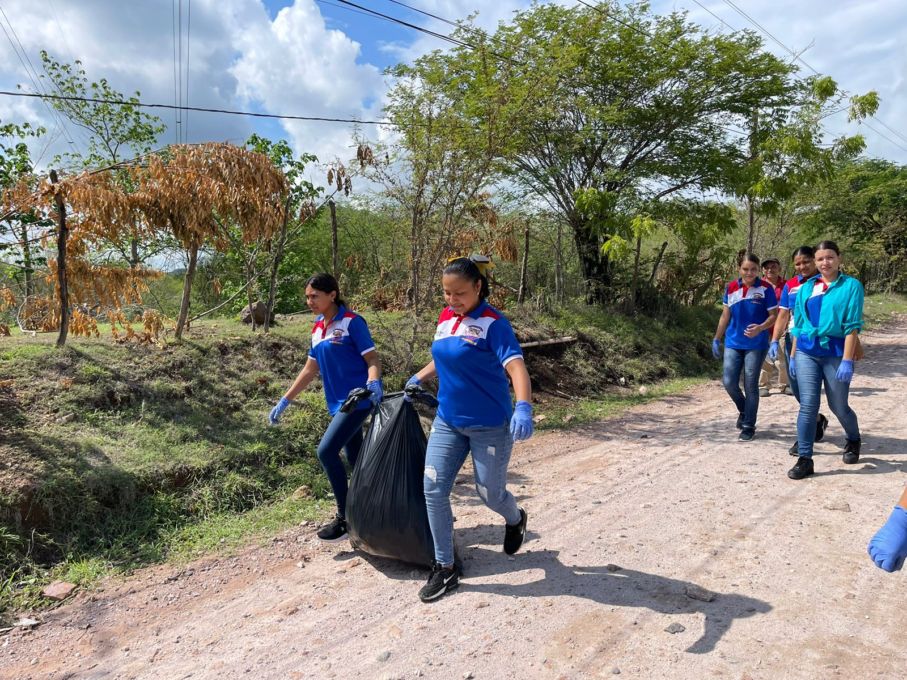

Ofrecemos
En el Instituto Dr. Marco Aurelio Soto, ofrecemos una educación integral con programas de formación en diversos niveles y áreas:
Tercer ciclo de Educación Básica (7°, 8°, 9°)
Bachilleratos
Bachillerato en Ciencias y Humanidades
El Bachillerato en Ciencias y Humanidades capacita al estudiante en áreas como ciencias naturales, matemáticas, química y física. Además, se abordan temas de ciencias sociales y el correcto uso de la expresión oral y escrita.

Bachillerato Técnico Profesional en Informática
Este bachillerato te brindará las competencias necesarias para desenvolverte en el mundo de la tecnología, programando, diseñando sistemas y desarrollando soluciones tecnológicas.
Bachillerato Técnico Profesional en Contaduría y Finanzas
La Contaduría tiene como propósito medir, registrar y analizar todo el capital financiero de una compañía, brindando conocimientos en finanzas, auditoría, inversión, presupuestos y más.
Bachillerato Técnico Profesional en Administración de Empresas
La carrera de Administración de Empresas prepara profesionales capacitados para administrar eficazmente y dirigir los recursos humanos de una organización, brindando conocimientos en economía, contabilidad y administración.
Instalaciones
Contamos con instalaciones modernas y bien equipadas para proporcionar el mejor ambiente de aprendizaje a nuestros estudiantes:
Laboratorio de Informática

Laboratorio Contable

Laboratorio de Ciencias Naturales
Aulas de Clase
Cancha Polideportiva Techada
Baños
Sala de Maestros

Librería y Fotocopiadora
Microempresa del Bachillerato Técnico en Administración de Empresas
Actividades
Fomentamos un ambiente enriquecido por diversas actividades que promueven el desarrollo integral de nuestros estudiantes.
Día del Pino, Árbol Nacional de Honduras
Gobierno Estudiantil
Día del Reciclaje
Feria Científica
Día del Estudiante
Día de la India Bonita
Mini festival la CUMA
Día del Mes de la Familia
Proyección con otros Centros Educativos
Fiestas Patrias
Banda Marcial IDMAS
Huerto
Campañas de Limpieza

Visitas a Centros Educativos para Mantenimiento de Laboratorio de Informática
Capacitación
Capacitación Técnicas de Ingeniería Social y Phishing en ciberseguridad a estudiantes de duodecimo de BTP en informática impartida por el departamento de informática COHESSA, SOLAR Power